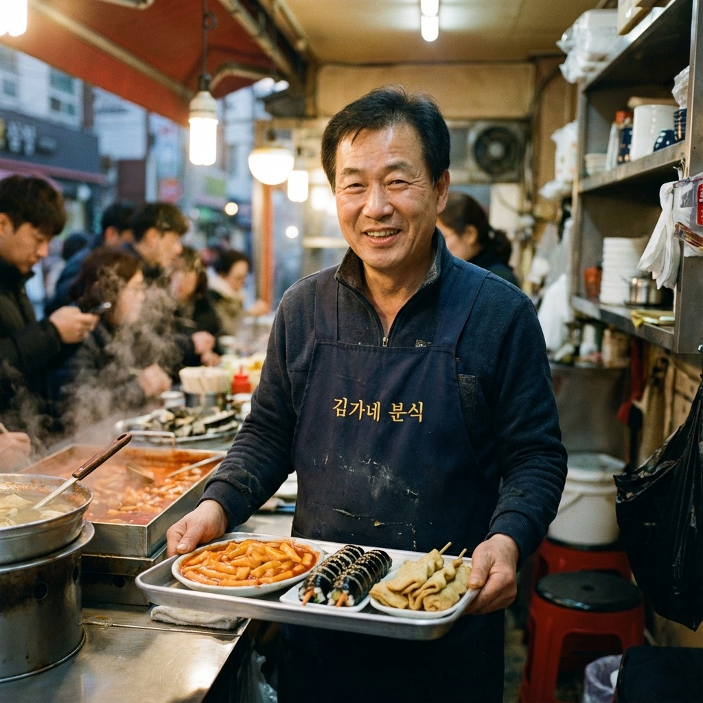
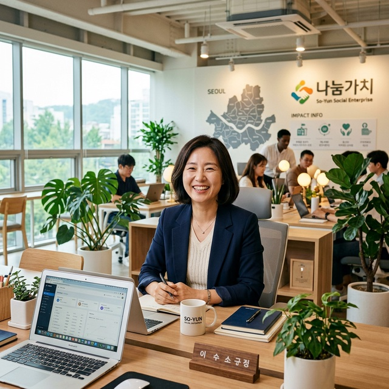
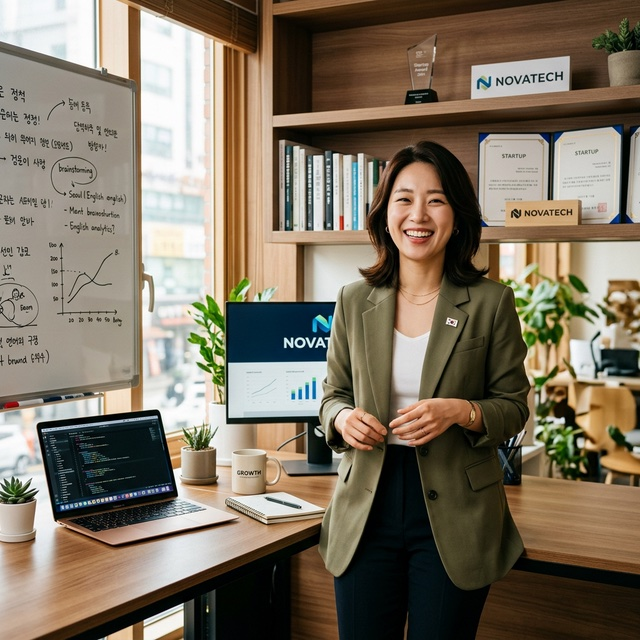
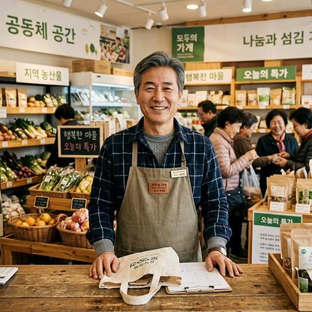
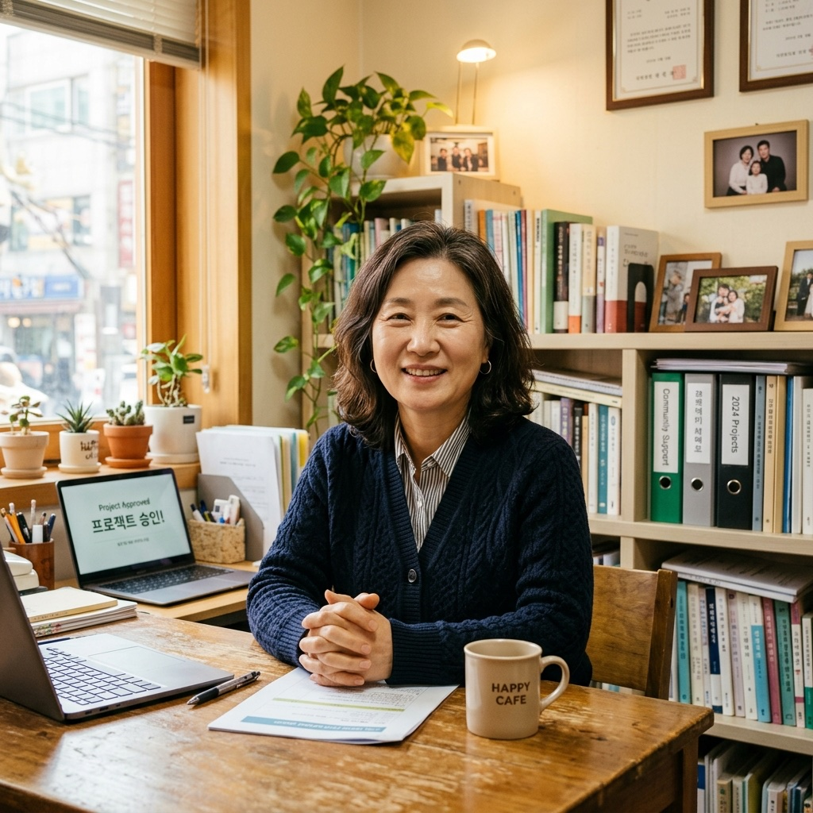
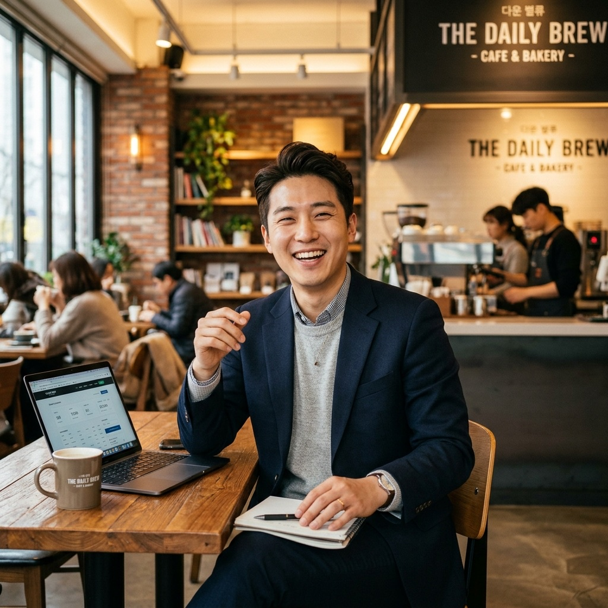

운영 자금이 급해 막막했는데, 미소금융 덕분에 위기를 넘기고 다시 일어설 수 있었습니다.이야기 자세히 보기
사례의 지원금액은 당시 이용 기준입니다. 현재 상품 조건은 지원상품 안내에서 확인해 주세요.

STORY 02분식집 운영푸드트럭 운영이 막막했는데, 친절한 컨설팅과 운영자금 상담으로 다시 안정적인 장사를 이어갈 수 있었습니다!이야기 자세히 보기
 STORY 03화물 운송업
STORY 03화물 운송업저신용자라 대출이 힘들 줄 알았는데, 낮은 금리로 지원해주셔서 정말 큰 힘이 되었습니다.이야기 자세히 보기

STORY 04사회적기업 운영취약계층 고용으로 자금 융통이 어려웠는데, 사회연대금융 덕분에 안정적으로 사회적기업을 성장시킬 수 있었습니다.이야기 자세히 보기

STORY 05사회적협동조합 이사장초기 사업 모델 검증 단계에서 자금이 부족해 막막했습니다. 한도 5천만원의 사회연대금융 대출로 위기를 넘기고 본인증을 향해 나아가고 있습니다.이야기 자세히 보기

STORY 06예비사회적기업 대표지역사회 공헌 사업을 확장하려 했지만 담보가 없어 대출이 쉽지 않았습니다. 미소금융의 따뜻한 지원 덕분에 조합원들과 함께 꿈을 실현했습니다.이야기 자세히 보기

STORY 07금융취약계층 생계자금 이용갑작스러운 의료비 지출로 눈앞이 캄캄했습니다. 다행히 '금융취약계층 생계자금' 상담으로 급한 비용을 해결하고 무사히 일상으로 복귀했습니다.이야기 자세히 보기

STORY 08청년 미래이음 대출 이용생활비와 구직 준비 비용이 겹쳐 막막했는데, '청년 미래이음 대출'과 재무상담 덕분에 지출 계획을 세우고 다시 도전할 힘을 얻었습니다.이야기 자세히 보기
졸업을 앞두고 구직 준비 비용이 부담됐는데, 청년 미래이음 대출과 재무상담 덕분에 면접 준비와 생활비 걱정을 덜었습니다.이야기 자세히 보기
SUPPORT THAT CONTINUES
사례에서 확인할 수 있는 지원 포인트
상담부터 실행 이후 안정화까지, 전 과정을 함께 살핍니다.
01
상담 중심 지원
- 고객 상황에 맞춘 상품 안내
- 필요 서류와 준비 절차 설명
- 상담 및 심사 결과에 따른 한도 안내
02
운영 안정 지원
- 자영업자 운영자금 상담
- 청년운영자금 및 청년 미래이음 대출 안내
- 금융취약계층 생계자금 상담 연계
03
자립 기반 강화
- 재무상담과 상환계획 점검
- 사회연대금융을 통한 사회적경제 조직 지원
- 실행 이후 경영 안정화 상담
LET’S TALK
혼자 고민하지 마세요.
가까이에서 듣겠습니다.
나에게 맞는 지원이 있는지,
전화 한 통으로 먼저 이야기 나눠보세요.
미소금융 부산중구법인
부산 중구에서
만나 뵙겠습니다.
부산광역시 중구 중앙대로 21서민금융통합지원센터 (우) 48955
- 상담시간
- 평일 09:00–18:00
- 점심시간
- 12:00–13:00
- 팩스
- 051-255-0076
주말·공휴일 휴무 · 방문 전 전화 문의 권장
네이버 지도로 길찾기